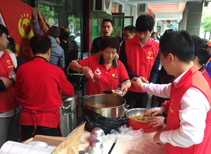
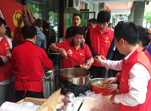

在中国
一心一益关爱基金以北京总部为中心，在东莞、温州、南通、哈尔滨、河北、西安等全国二十多个省市地区开展多项公益活动。
青蚨一心一益关爱基金简介
（一）基本介绍
青蚨爱心公益基金是青蚨集团为发展公益事业、助力和谐社会发展专门发起的专项公益基金。其设立宗旨是倡导企业社会慈善和公益行为，创造社会和谐环境，造福人类。青蚨一心一益关爱基金中所有基金主要用于帮扶弱势群体、助力青少年发展等项目。目的在于推动整个互联网金融行业乃至企业公民、社会责任领域的爱心公益进展。
（二）资助方向
青蚨爱心公益基金资助方向现有：
1.青少年扶持计划：
此计划是青蚨集团联合共青团影视中心共同发起，所筹资金主要拥有青少年成长、学习、希望工程建设及其他有助于青少年成长的项目。
2.关注星星的孩子：
现在，全球每20分钟就有一个孩子被诊断为自闭症，自闭症患者已达6700万。中国的自闭症患儿也已经超过100万，且患病率逐年上升，未被诊断发现或有自闭症倾向的孩子可能更多。孩子是祖国的未来，家庭的期盼。自闭症孩子是一个特殊群体，也是一个弱势群体。青蚨一心一益关爱基金一直在关注他们的康复，更用实际行动帮助他们。
更多公益项目正在不断更新中，敬请期待。
青蚨一心一益关爱基金向全社会发起号召：
为了进一步倡导社会慈善和公益行为，创造社会和谐环境，造福人类。青蚨一心一益关爱基金在此呼吁广大爱心人士及企业积极加入我们！共同为了美好的未来而努力！
一心一益 让爱永驻
北京
1.9月青蚨携手腾99公益，在全国范围内发起“关注星星的孩子”活动。希望能尽自己的微博之力帮助他们。
毕业季，青蚨积极参与“绿色离校·绿色感恩”活动中，与同学们一起支持绿色环保。

一心一益关爱基金小分队走近阳光路康复机构，关爱星星的孩子，与星星的孩子互动，帮助他们进行康复训练。
温州
青蚨温州客户服务中心与温州最有影响力的慈善机构“红日亭”慈善机构开展了一场“青蚨与公益同成长”活动，传递公益正能量践行企业社会责任。
 

此次活动中，青蚨准备了青蚨准备了大米、红豆、茯茶等等基本生活物资及礼品回馈始终辛苦付出的义工们；同时青蚨积极加入义工队伍中，与“红日亭”慈善机构的朋友们一起走进社区，现场发放茯茶、粥等，真正用自己的行动践行企业公益的发展理念。
东莞
青蚨东莞的小伙伴们积极参与到“依旧情深 点亮梦想”的活动中，活动现场，大家分享读书心得，推荐优秀的读本，现场很多朋友纷纷捐赠出自己喜欢的图书。

在支持绿色环保方面，青蚨东莞还开展各种路演活动，宣传节约用电、垃圾分类、旧衣捐赠等绿色环保项目。


自闭症
儿童孤独症是广泛性发育障碍的一种亚型，以男性多见，起病于婴幼儿期，主要表现为不同程度的言语发育障碍、人际交往障碍、兴趣狭窄和行为方式刻板。约有3/4的患者伴有明显的精神发育迟滞，部分患儿在一般性智力落后的背景下某方面具有较好的能力。
孤独症的患病率报道不一，一般认为约为儿童人口的2～5/万人，男女比例约为3:1～4:1，女孩症状一般较男孩严重。
自闭症的影响不分地理、种族或阶级，全球每20分钟就有一个孩子被诊断为自闭症。美国自1992年开始收集有关自闭症的数据，到2003年，被诊断为自闭症的儿童人数猛增了800%，在美国每150个孩子中就有一个被诊断为自闭症，每94个男孩中就有一个患自闭症，而在1990年，每10万个儿童才有一个患自闭症。研究人员已经发现了与自闭症相关的基因，但造成自闭症的根本原因目前还不清楚。21世纪初自闭症患者人数上升的原因之一是诊断的加强。根据在北美、西欧和日本所收集的数据估计，全球有3500万人患有自闭症。
二牛：
二牛的父母都是智力残疾，没有任何家庭收入，全凭二牛爷爷一人支撑全家的开销，2010年，二牛两岁，相比其他的孩子，他各方面发展都尤其缓慢。经过医院的检查，不幸的樊华被诊断为患有自闭症。

常语涵(女7岁，多重障碍）
语涵是一名自闭症小朋友，在三岁的时候发烧后引起无热抽，诊断癫痫。病情评估智力二级。
常语涵一家四口，爷爷以种地为生，一家人为了常语涵的康复，四处奔波，针灸、按摩，可以适用的方法都适用了，跑遍了大半个中国，花光了所有的积蓄，但小语涵的病情并没有得到很好的康复，没有语言交流，生活不能自理。
语涵父母文化水平有限，但为了语涵的康复，也倾尽了自己的所有，为了康复，语涵与父亲租住在学校附近，母亲则在北京房山上班。每个月学费及房租费，还有年迈的爷爷看病费用，让一家人十分窘迫。
在对语涵父亲的一次采访中，语涵爸爸的小小愿望“希望可以有机会一家人出去旅游一次”打动了很多人。
林芳仪：
芳仪出生在一个离异的家庭，因为重男轻女的思想，母亲独自一人带着姊妹四人在北京生活。三个姐姐都需要上学，所有的压力都放在了母亲一个人的肩上。即使生活压力如此巨大，但是芳仪的母亲从没有放弃过小芳仪的康复训练。每次见到他母亲，都会被她身上的坚强乐观所感染，她曾向青蚨一心一益关爱基金的工作人员表示，即使小芳仪的训练是一个持久战，但是只有坚持下去才会有希望。
功夫不负有心人，经过多年的康复训练，小芳仪可以仿说简单的短句。

青蚨一心一益
详细内容详细内容
青蚨集团联合共青团影视中心共同发起，所筹资金主要拥有青少年成长、学习、希望工程建设及其他有助于青少年成长的项目。
孩子是未来的希望，但一些贫困地区的孩子就学问题依然存在。青蚨一心一益关爱基金与共青团联合，首批预计帮扶100名孩子解决上学问题。
青蚨一心一益关爱基金致力于帮扶每一位贫困大学生，为家庭贫困的大学生提供无息贷款，并不会为此进行宣传，充分尊重大学生的隐私，让贫困家庭的大学生能够不为生活所累，安心学习、钻研学术，成为国家建设的栋梁之才。青蚨一心一益关爱基金计划分阶段与北京市重点高校对接，第一阶段首批帮扶10名贫困大学生，一年之内帮扶50名贫困大学生，第二阶段计划在三年内帮扶500名贫困大学生，第三阶段将此项计划在全国范围内实施，为广大贫困大学生解决升学之忧。一人之力很小，万人之力巨大，希望社会各界能够伸出援手，和青蚨基金一道点亮贫困大学生的求学之路。